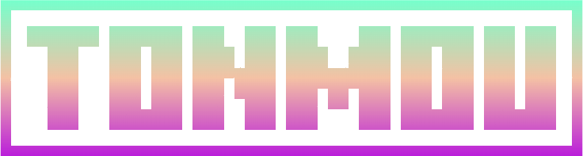
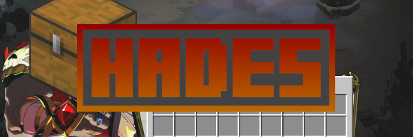
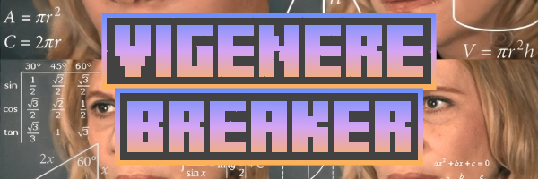
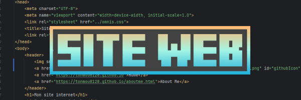

Tonmou8128
Écoute sur Spotify:


Home About MeBienvenue chez
Écoute sur Spotify:
Salut ! Je m'appelle Tonmou, je suis lycéen, j'étudie l'art des mathématiques, et la sorcellerie de la physique. J'aime beaucoup les jeux vidéos, et surtout l'informatique. J'ai créé ce site web afin d'y exposer mes différents projets informatiques, qui m'occupent durant mon temps libre.
Je code depuis presque 2 ans maintenant, je reste un novice dans ce domaine, mais je suis curieux, et j'aime découvrir de nouvelles choses, de nouveaux aspects.

Un virion PocketMine-MP capable de créer et gérer des menus virtuels de coffre (Chest-UI).

Un ptit programme en Python qui décode un texte sans la clé codé en "Vigenère" supposé indéchiffrable car codé avec une clé
Ça peut aussi coder et décoder en César et en Vigenère (décoder aussi en indiquant la clé)

Le site internet que vous êtes en train de consulter. Il est tout beau, tout neuf ! Créé pour le fun, rien de très sérieux ni professionnel, juste sur un coup de tête, mais c'est fait avec attention et ça donne un résultat de qualité :)